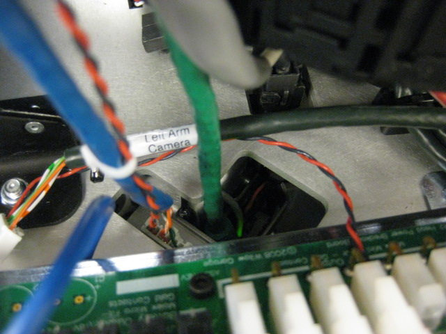

Make sure the torso is UP before running this test. The arm will hit the base of the robot if the spine is down.
Plug in the arm to the qualification fixture. Unplug the cables from the robot and plug into the qualification system. You will need the 48V power, etherCAT and the wge100 camera cable.
Press "Continue" to proceed.